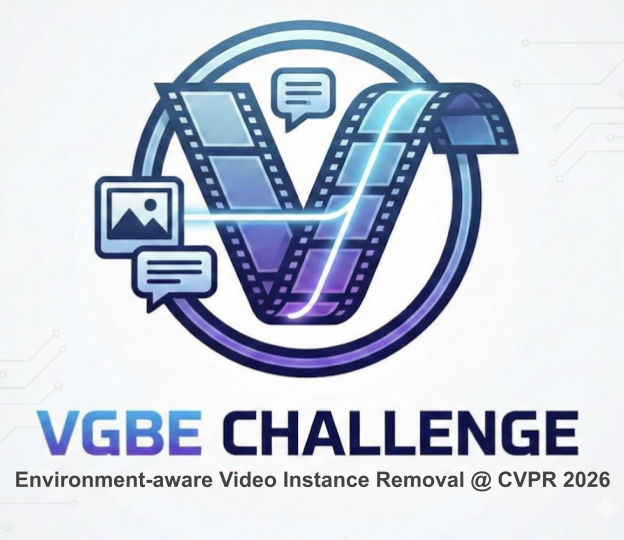

PVIX Highest Score Award
#1
higher
Overall
0.8651

Final rankings combine human evaluation with VBench scores. Public participant details are shown where available.
| Rank | Team | Participants | Human | VBench | Overall |
|---|---|---|---|---|---|
| 1 | higher | Jiagao Hu, Yuxuan Chen, Yu Liu, Shaofeng You, Fei Wang, Daiguo Zhou · Xiaomi Inc. | 0.8693 | 0.8487 | 0.8651 |
| 2 | sanxia | Lunhao Duan · Alibaba Group | 0.7866 | 0.8342 | 0.7961 |
| 3 | sssssys | Yusi Cao, Jiahui Wang, Yuying Chen · Xidian University | 0.6688 | 0.7736 | 0.6898 |
| 4 | weixiaoxue | Yuhan Zheng, Yang Yang · Nanjing University of Science and Technology | 0.6470 | 0.7899 | 0.6756 |
| 5 | nitizkhanal | Nitiz Khanal · Independent Researcher | 0.6013 | 0.6595 | 0.6129 |
| 6 | lemonr1 | Hui Huang · Sun Yat-sen University | 0.5850 | 0.7635 | 0.6207 |
| 7 | stangerine | Xujiang Chen · South China University of Technology | 0.5829 | 0.7751 | 0.6213 |
| 8 | cd2026 | 0.5781 | 0.7926 | 0.6210 | |
| 9 | waget1 | Yuan Wang · Independent Researcher | 0.5770 | 0.7904 | 0.6197 |
| 10 | zzz666 | 0.5708 | 0.8192 | 0.6204 | |
| 11 | yhwang449 | 0.5737 | 0.7588 | 0.6107 | |
| 12 | zhengyuhan | 0.5708 | 0.7415 | 0.6049 | |
| 13 | 111111_009 | 0.5566 | 0.7792 | 0.6011 | |
| 14 | civilwen | 0.5544 | 0.7981 | 0.6032 | |
| 15 | nilliti_ai | Gregory Varghese Manalumbhagath, Lavanya M Krishnamurthy, Sabyasachi Chakrabarty · Nillit AI | 0.5490 | 0.7970 | 0.5986 |
| 16 | windrise | 0.5434 | 0.7234 | 0.5794 | |
| 17 | wjh0602 | 0.5260 | 0.7734 | 0.5755 | |
| 18 | cyy12175 | 0.4786 | 0.5690 | 0.4967 |
Remove the car from the scene and eliminate the smoke produced by its drifting.
Remove the birds from the scene and eliminate the ripples and splashes they created.
Remove the bear from the scene, eliminate the water splashes from its walking, and erase the tracks it left behind.
Remove the person and the ripples they created in the water.
Remove the snowboarder and their snowboard, eliminate the snow dust they kicked up, and erase all tracks.
Remove the yellow ball from the scene.
Remove the paper from the table.
This challenge is jointly organized by Texas A&M University, Visko Platform, and Abaka AI.
The 1st Workshop on Video Generative Models: Benchmarks and Evaluation (VGBE) will be held in June 2026 in conjunction with CVPR 2026.
Recent advances in video generative models, such as Sora, Veo, and Wan, have demonstrated an unprecedented ability to generate high-fidelity content. However, moving toward practical workflows requires pushing video editing beyond simple object deletion. In real-world scenarios, removing an object is complex because objects interact dynamically with their surroundings. A truly realistic removal requires modeling and regenerating these environmental interactions—such as shadows, reflections, water ripples, or secondary motion propagation—to maintain physical plausibility.
This challenge focuses on physics-aware video restoration. Unlike traditional inpainting, participants must ensure that the "void" left by a removed object is filled with content that is not only visually consistent but also physically coherent with the rest of the scene. This requires a deep semantic understanding of how objects influence their environment through lighting, physics, and geometry.
Hosting this challenge accelerates the development of models capable of sophisticated, physically-grounded video manipulation. It provides a standardized benchmark to evaluate how effectively these systems can restore complex environments while maintaining perfect temporal stability.
The top-ranked participants will be awarded and invited to describe their solution to the associated VGBE workshop at CVPR 2026. The results of the challenge will be published in the VGBE 2026 workshop (CVPR Proceedings).
Task: Physics-aware Video Instance Removal
Given an Input Video, a Text Prompt describing the object, and a Segmentation Mask, the model must generate a video that:
To ensure fairness and standardized evaluation, all submissions must adhere to the following technical constraints:
We encourage participants to explore or build upon recent efficient architectures, such as:
The evaluation process consists of two primary components:
Human Evaluation Score: Calculated as the weighted sum of the four dimensions above.
To balance objective performance with human-centric quality, the final ranking is determined by:
We have established a total prize pool of $1,000 USD:
$500 USD
+ Award Certificate
$500 USD
+ Award Certificate
Recognizes technically novel or methodologically inspiring contributions. A technical report is required.